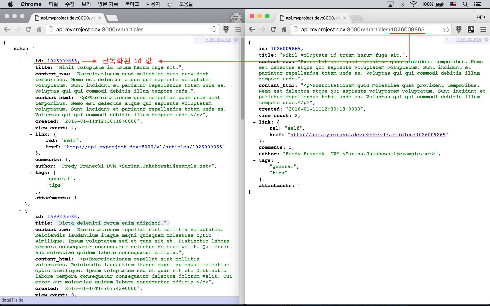

실전 프로젝트 3 - RESTful API
50강 - 리소스 id 난독화
Why?
엘로퀀트는 기본적으로 자동 증가 ID 를 PRIMARY KEY 로 사용한다. 대부분의 서비스들이 아무런 문제없이 이렇게 사용한다. 그런데, 어떨 때는 PRIMARY KEY 가 예측이 불가능한 것이 더 나은 경우가 있다. 아래 예를 생각해 보자.
예를 들어 식당을 예약하고 예약 내용을 얻어 오는 API 를 서비스한다고 가정하자. API 클라이언트가 예약 API 를 호출했고, 해당 클라이언트를 소유한 사용자의 예약 id 인 15 번을 담은 JSON 을 응답했다고 가정해 보자. 인증이나 권한 부여가 없는 API 서비스였다면... 이 클라이언트는 14 번 예약을 읽어 볼 수도 있고, 16 번 예약을 변경하거나 삭제할 수도 있게 된다.
또 이건 어떤가? $id++ 이용해서 API 데이터 전체를 훔칠 수 있다. 가령, /users/{id} 처럼 사용자 profile 에 대해 API 요청을 할 수 있다면 사용자 정보를 훔칠수도 있고, 경쟁자가 우리 서비스의 전체 사용자 수도 카운트할 수 있다. 대형 서비스에서 자동 증가 ID 를 절대 사용하면 안되는 이유이다.
class Scraper
{
protected $base;
protected $client;
protected $failCount;
public function __construct($base)
{
$this->base = $base;
$this->client = new \GuzzleHttp\Client;
}
public function steal($id)
{
try {
$response = $this->client->get($this->base . DIRECTORY_SEPARATOR . $id);
if ($response->getStatusCode() !== 200) {
throw new \Exception('Failed');
}
$this->failCount = 0;
return \File::put(storage_path("stealed/{$id}.json"), $response->getBody()->getContents());
} catch (\Exception $e) {
$this->failCount++;
if ($this->failCount !== 0 and $this->failCount <= 3) {
$this->steal($id);
}
return false;
}
}
}
$scraper = new Scraper('http://your-api-host/articles');
$id = 1;
while ($scraper->steal($id) !== false) {
$i++;
}How?
두가지 방법이 있다.
- DB 에 기록할 때 Auto-increment ID 를 사용하지 않고, 난수화된 ID 로 기록하는 방법
- DB 기록은 Auto-increment ID 를 사용하되, 사용자에게 전달될 때는 난수화하여 전달하는 방법
우리의 실전 프로젝트가 처음부터 MongoDB 와 같은 NoSQL Document DB 를 선택했다면, 이 문제는 처음부터 없었을 것이다. 우리 프로젝트는 MySql 을 사용하고 있으므로 두번째 방법을 이용할 것이다.
참고 Auto-increment ID 를 사용하지 않을 경우, 각 모델에서 public $incrementing = false; 로 설정해 주고, 모델을 만들 때 마다 id 값을 직접 넣어 주어야 한다.
참고 라라벨에서 MongoDB 를 사용하고자 할 때는, $ brew install homebrew/php/phpXX-mongodb 명령으로 MongoDB 확장 모듈을 설치한 후, 라라벨용 jenssegers/mongodb 드라이버 패키지를 설치해서 이용하자.
난독화 패키지 선택 및 설치
이 강좌에서는 jenssegers/optimus 패키지를 이용한다.
$ composer require jenssegers/optimus난독화에 사용할 소수 (素數, Prime number) 를 만들자. 생성된 값은 곧 사용해야 하니 잘 기록해 두자.
$ vendor/bin/optimus spark
# Prime: 132961291
# Inverse: 1484265379
# Random: 37817169Tinker 코맨드로 방금 설치한 패키지를 사용해 보자. 어떤 원리로 동작하는 지 쉽게 감을 잡을 수 있을 것이다.
$ php artisan tinker
>>> $optimus = new Jenssegers\Optimus\Optimus(132961291, 1484265379, 37817169);
=> Jenssegers\Optimus\Optimus {#805}
>>> $optimus->encode(1);
=> 95280986
>>> $optimus->decode(95280986);
=> 1참고 base62 를 이용한 zackkitzmiller/tiny-php 난독화 패키지도 추천한다.
참고 또 하나의 옵션은 UUID 패키지, ramsey/uuid, webpatser/laravel-uuid 를 이용하는 것이다. 다만 UUID 를 사용할 경우, 문자, 숫자, 대시가 포함된 36 Byte 가 id 값으로 사용되므로, 그에 맞게 App\Providers\RouteServiceProviders 에서 $router->pattern() 부분을 손 봐 주어야 한다.
난독화 패키지 정합
디자인
우리 프로젝트의 요구에 맞도록 아래와 같이 동작 구조를 디자인 해 보자.
- 난독화 기능을 쉽게 사용할 수 있도록 Service Provider 를 만들자.
- API 에서만 난독화를 적용하자.
- JSON 응답을 내 보낼 때, 48강 - all() is bad 에서 만든 Transformer 에서 id 를 난독화하자.
- URL 을 통해서 넘어온 난독화된 id 값을 Route Middleware 에서 해독하자.
Service Provider and Helper
매번 new 키워드와 좀 전에 만든 소수를 넣어서 Optimus 를 깨울 수 없으니, Service Provider 를 만들자.
// app/Providers/AppServiceProvider.php
class AppServiceProvider extends ServiceProvider
{
public function register()
{
$this->app->singleton(\Jenssegers\Optimus\Optimus::class, function () {
return new Optimus(132961291, 1484265379, 37817169);
});
// ...
}
}내친 김에 optimus() Helper 도 만들자.
// app/helpers.php
function optimus($id = null)
{
$factory = app(\Jenssegers\Optimus\Optimus::class);
if (func_num_args() === 0) {
return $factory;
}
return $factory->encode($id);
}Transformer
적용 방법은 모두 동일하니 ArticleTransformer 하나만 살펴 보자.
// app/Transformers/ArticleTransformer.php
class ArticleTransformer extends TransformerAbstract
{
public function transform(Article $article)
{
$id = optimus((int) $article->id);
return [
'id' => $id,
// ...
'link' => [
'rel' => 'self',
'href' => route('api.v1.articles.show', $id),
],
// ...
];
}
}참고 API 뿐아니라 서비스 전체에 걸쳐 난독화된 ID 를 사용하고 싶다면, Transformer 보다는 모든 Model 들이 상속 받고 있는 추상 부모 클래스에 Accessor 를 구현하는 것이 더 적절한 방법이라 생각된다. 아래 예처럼 말이다.
// app/Model.php
abstract class Model extends Eloquent
{
public function getIdAttribute($value)
{
return optimus($value);
}
}Route Middleware
앞 절에서 Transformer 를 이용해서 API 응답에만 난독화된 ID 를 제공하는 것으로 구현했으므로, API 컨트롤러에서 모델에 대한 쿼리를 하기 전에 난독화된 ID 를 해독해 주면 된다. 최선의 방법인지는 모르겠지만, API 요청일 경우에만 적용하기에 가장 적절한 방법을 필자는 Route Middleware 라고 생각했다.
$ php artisan make:middleware ObfuscateId37강 - Article 기능 구현 에서 소유자가 아닌 경우, Article 모델을 변경하거나 삭제할 수 없도록 하기 위해서 미들웨어 파라미터를 받을 수 있는 CanAccess 미들웨어를 만든 기억을 더듬어 보자. $ php artisan route:list 로 봤을 때, Route::resource() 를 이용한 URL Endpoint 에서 Route Parameter 는 {id} 가 아니라, {articles} 와 같이 이름이 지어진다는 점을 확인할 수 있었다. 여기서도 미들웨어 파라미터 $param 으로 넘긴 값을 이용해서 Route Parameter 키 값을 계산하고 있다. 여기서 $routeParamName = 'articles' 가 된다.
Route Parameter 가 {articles} 라는 것을 알았다. 값을 받아 보면 난독화되어 있을 것이다. 이 값을 optimus() 로 해독하여, 기존 Route Parameter 값을 오버라이드하는 작업을 해 주어야 한다. 여기서 $routeParamValue = 1026009865 와 같은 값이고, optimus()->decode(1026009865) = 8 처럼 처리된다. getParameter(), setParameter() 는 Request 인스턴스에 바인딩되어 있는 Route 인스턴스의 메소들이다.
// app/Http/Middleware/ObfuscateId.php
class ObfuscateId
{
public function handle(Request $request, Closure $next, $param = null)
{
$routeParamName = $param ? str_plural($param) : 'id';
if ($routeParamValue = $request->route()->getParameter($routeParamName)) {
$request->route()->setParameter($routeParamName, optimus()->decode($routeParamValue));
}
return $next($request);
}
}'app/Http/Kernel.php' 의 $routeMiddleware 섹션에 등록하는 것을 잊지 말자. 필자는 obfuscate 별칭으로 등록하였다.
참고 서비스 전체에 ID 난독화를 적용하고 싶다면, 방금 만든 미들웨어를 글로벌 미들웨어로 등록하면 될 것이다. 이 경우 Route 나 컨트롤러에서 $this->middleware() 를 정의할 필요가 없어지게 된다.
Controller
미들웨어를 적용하자. obfuscate:article 과 같이 Middleware Parameter 를 넘겨 준 것을 확인하자.
// app/Http/Controllers/Api/V1/ArticlesController.php
class ArticlesController extends ParentController
{
public function __construct()
{
$this->middleware('obfuscate:article');
// ...
}
// ...
}테스트

Integration Test 코드도 약간 수정되었다.
$ phpunit